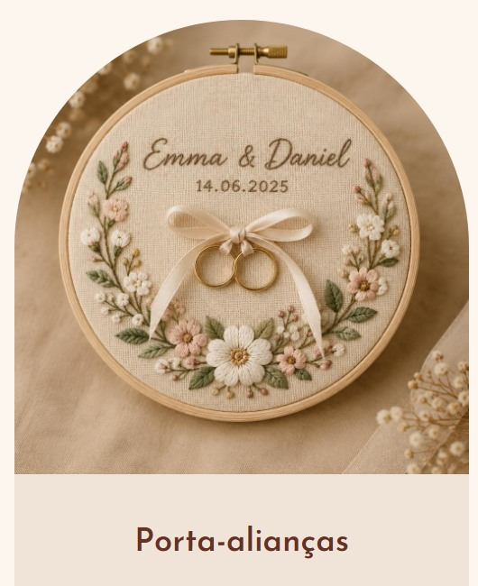
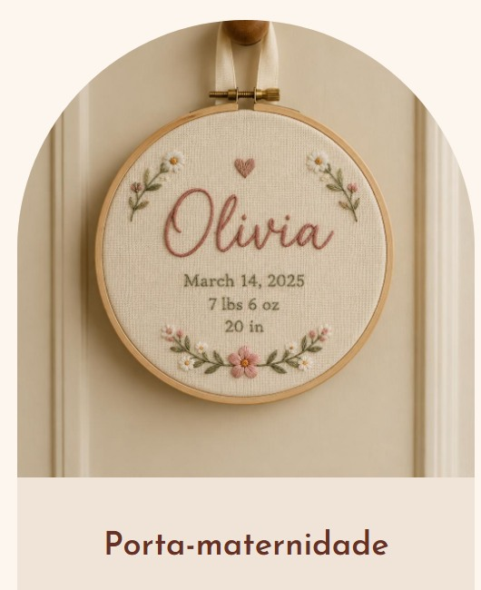
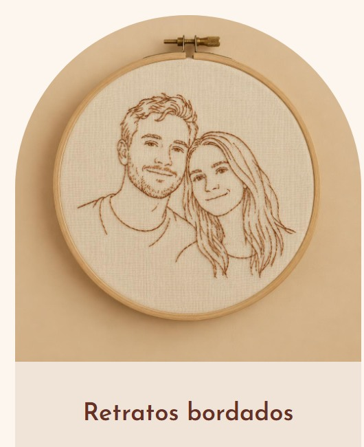
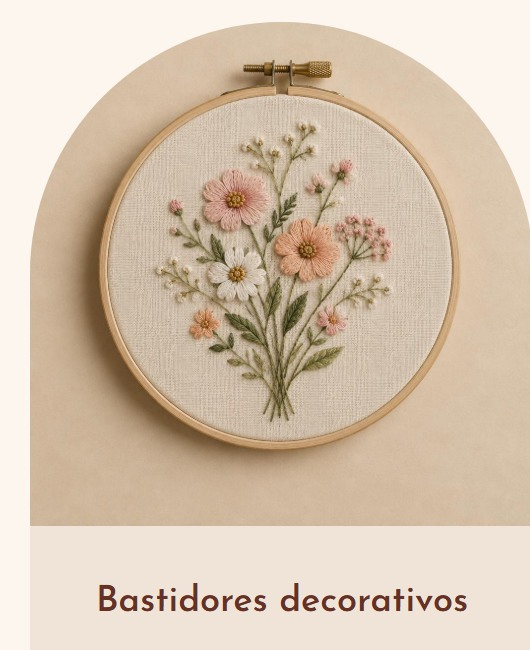
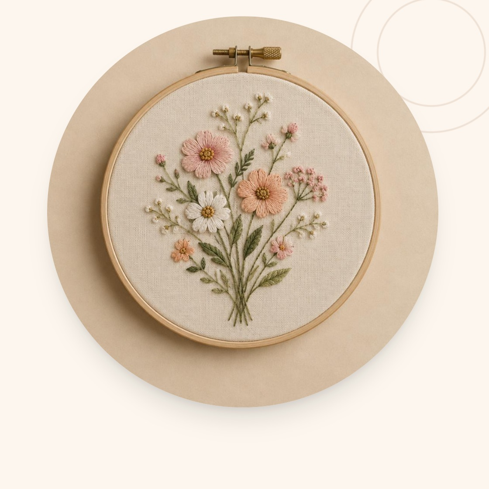
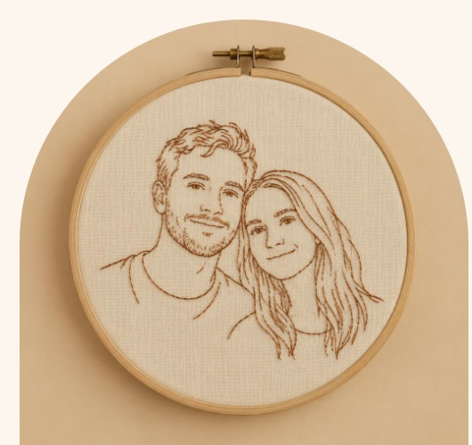
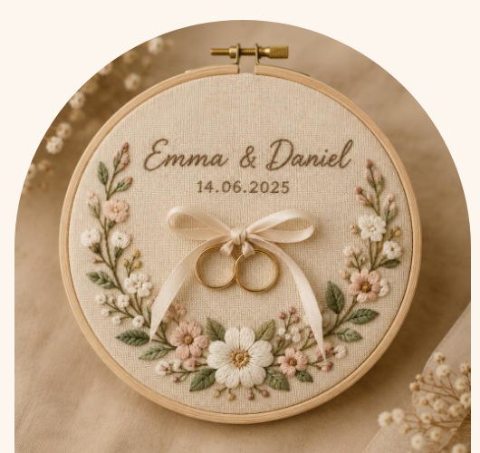
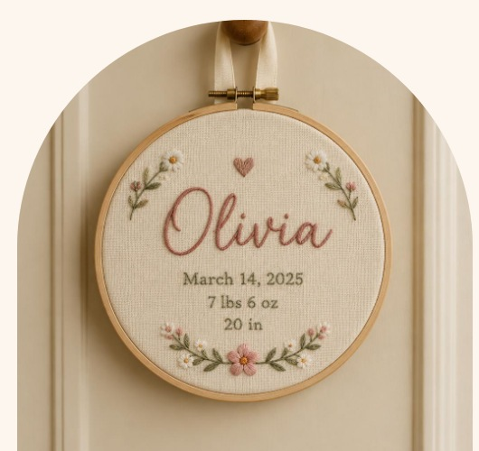
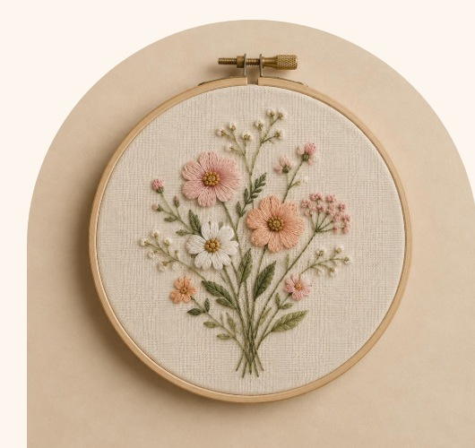

Porta-alianças
Um detalhe cheio de significado para acompanhar o início de uma nova história.
Conhecer modelosRiscos de Amor • bordados personalizados
Transformamos histórias, sentimentos e momentos especiais em bordados feitos à mão, com carinho em cada detalhe.
Um bordado para cada história
Escolha como deseja eternizar o seu.

Um detalhe cheio de significado para acompanhar o início de uma nova história.
Conhecer modelos

Pessoas, encontros e memórias especiais transformados em arte feita com afeto.
Conhecer modelos
Uma ideia, uma lembrança, uma história. Um bordado criado especialmente para você.
Contar minha ideia

O valor do feito à mão
Há algo especial em receber uma peça que foi criada para contar a sua história.
Na Riscos de Amor, cada bordado nasce de uma ideia e ganha forma ponto a ponto, transformando sentimentos em lembranças que você pode guardar, presentear e revisitar.
Veja como encomendarSua ideia ganha forma
Do primeiro contato até a chegada da peça, cada etapa é conduzida com atenção.
Escolha o tipo de bordado e compartilhe os detalhes do momento que deseja eternizar.
Conversamos sobre as possibilidades e definimos os detalhes do seu pedido.
Sua história ganha forma em um bordado produzido com atenção a cada detalhe.
Sua lembrança é preparada com cuidado e segue até você, em qualquer lugar do Brasil.
Histórias bordadas
Conheça algumas peças da Riscos de Amor.



Por trás dos bordados
Sou a pessoa por trás da Riscos de Amor, onde linhas e tecidos se transformam em peças que carregam histórias e sentimentos.
Acredito que os pequenos detalhes também merecem ser lembrados. É isso que busco transmitir em cada criação: um pedacinho de afeto que permanece.
Conheça meu trabalhoAntes de encomendar
As principais informações para você começar sua peça com tranquilidade.
Entre em contato e conte o que deseja bordar. Você pode enviar nomes, datas, referências e outras informações importantes para a composição.
Sim. A fotografia serve de referência para criar um retrato em linhas, preservando os traços mais importantes da imagem.
Sim. O risco é enviado para aprovação antes do início do bordado.
A disponibilidade, o prazo e os detalhes de envio são confirmados no atendimento, de acordo com a peça escolhida e a agenda do ateliê.
Encomendas personalizadas
Seja para celebrar um novo começo, presentear alguém especial ou guardar uma lembrança, vamos transformar sua ideia em algo único?
Encomendas personalizadas • envio para todo o Brasil